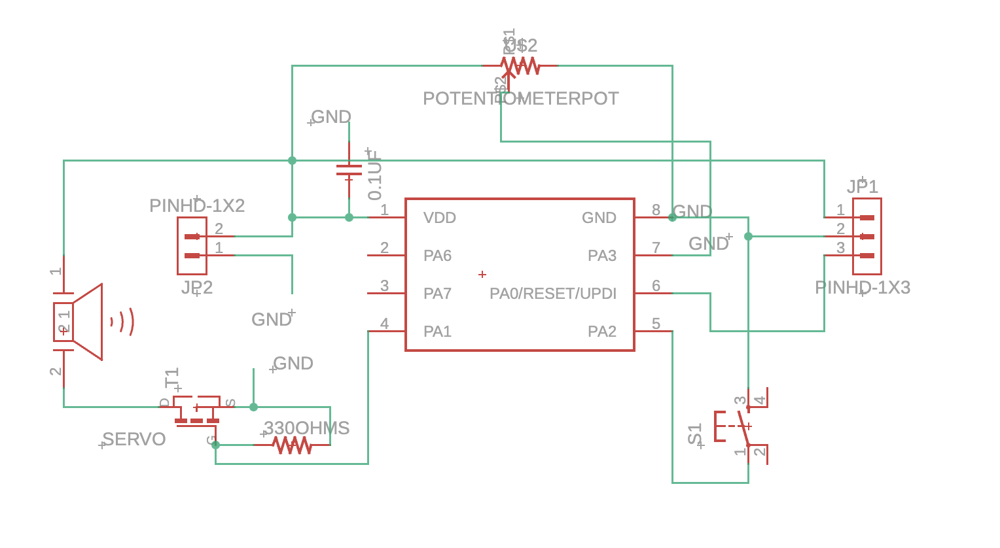
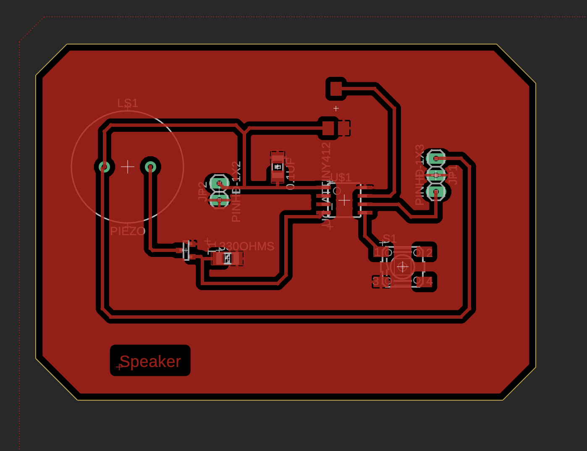
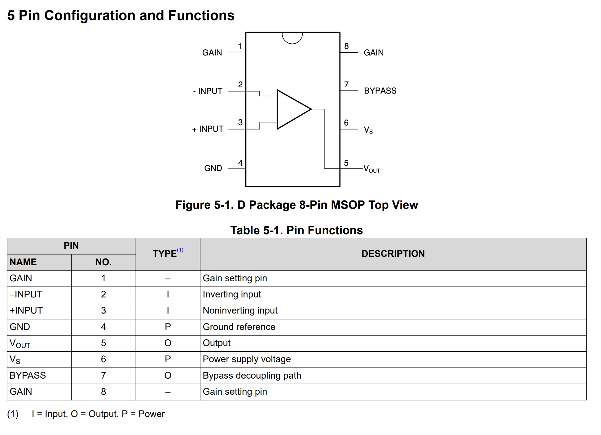

Week 9: Output Devices
(Analog) Speaker
Yes, all speakers are "analog," but after taking more of 6.3000, I wanted to make something that would work a bit with simple waveforms. The piezo disk generates voltage when you physically deform them, they're pressure-to-electricity converters. They have a crystal structure inside with asymmetric charge distribution, that, when you squeeze/bend/tap it, the lattice deforms and the charges move, creating a voltage spike.

Here, I'm driving a 'speaker' with pulse width modulation (PWM) (which is a technique used to encode information in a digital signal) through a potentiometer as volumn control. My PA6 pin will rapidly switch between high/low at audio frequencies and the piezo disk will generate a voltage spike at the same frequency, creating a buzzing sound.

The potentiometer is being read in software, where then I will scale the PWM signal to do some sort of pitch control. I use a n-channel MOSFET before the piezo because they can act as a switch. When the signal from PA6 goes high, the mosfet conducts and dumps current through the piezo from the VCC power supply, and when it goes low, it blocks (which helps, because otherwise the piezo would be buzzing just when I connect the board to power).
Anthropomorphize Everything!
As a fun sidequest, I decided to try to learn how to use an amp for a speaker. I used a LM386 audio amplifier, which is a simple audio amplifier that can be used to amplify audio signals.

This was very inspired by the googly eyes I put on my water bottle the other day... I want to put googly eyes (which have cameras, mic, and speaker either attached or connected) and be able to "talk" to them. The eyes will be connected to some online-running voice model (i.e., with SI or 11Labs) that have a sort of custom-generated personality based on what the object is, and you can talk to it. Voice models are quite powerful today, being able to sound like a human, support interruptions in conversation, and so on.
This was also inspired by a project a friend of mine spearheaded at Friendly Beans (a weekly coworking session I run in Boston) where she ran a series of "protests" to put googly eyes on the MBTA trains!

I actually did this as a side project over the weekend during the term! I built a speaker from using a speaker component and a LM386 amp.


The LM386 is a simple audio amplifier that can be used to amplify audio signals. I used a 10k resistor as a pull-down resistor to ground, and a 10k resistor as a pull-up resistor to VCC. I also used some capacitors to filter out noise, and putting it between the gains (10x, 20x, 50x) to get a louder sound. I then connected the output of the LM386 to the speaker.